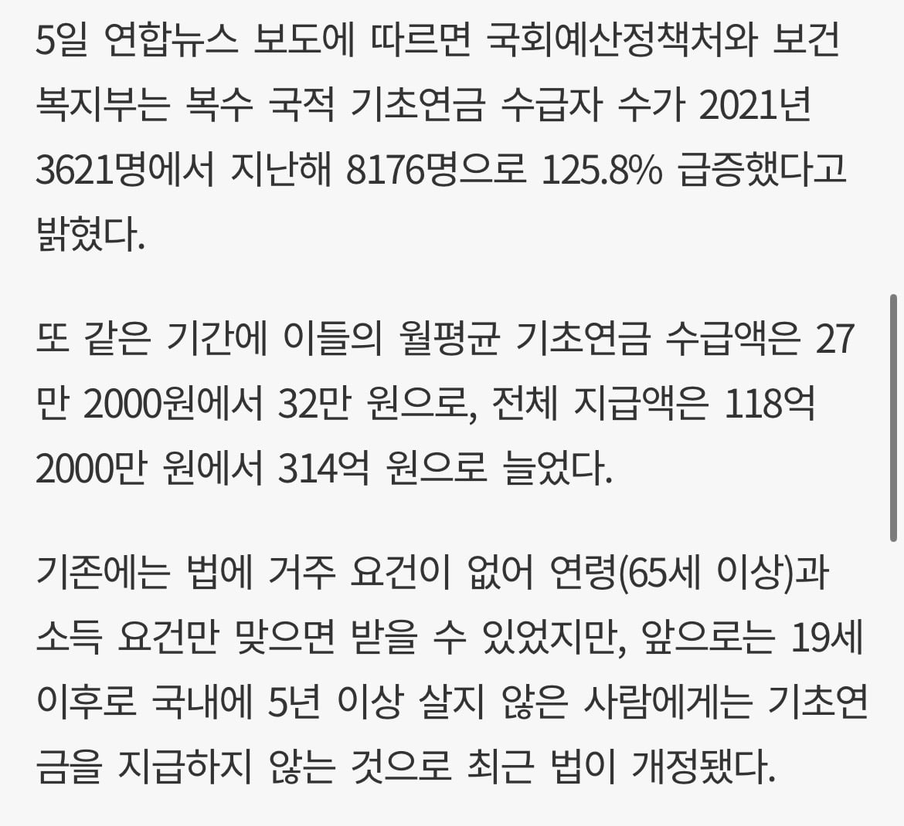

ㅊㅊ: https://www.busan.com/view/busan/view.php?code=2026110509031895453

ㅊㅊ: https://www.busan.com/view/busan/view.php?code=2026110509031895453
10년은 너무 짧소! 20년 합시다!
20년은 너무 짧소! 80년 합시다!
복수 국적은 누구한테 복수하려는건가요?
배에 물이차는거라네요~

복수는 복수를 원하는 자에게 복수한다
10년은 너무 긴가...
5년 짧아 보이는데..
이 씨발 자원입대 군필했으면 이중국적 좀 해줘라!!!!!
그 정도면 훈장줘야한다
그건 니 혜택 유지하려고 한거잖아
이유가 뭐든
국민의 의무를 행했으면 권리를 줘야지?
본인에게 혜택이 없어도 순수한 봉사정신으로 애국하라고 강요한 집단이 몇몇 있지
나치, 일본제국, 북한 등등
5년 이상에 국내에 실거주 시에만 주는게 맞다
복수국적 케이스가 쉽지 않던데
겨우 5년????
솔직히 5년은 금방 살거 같은데 ㅋㅋ
짱2깨 새끼들은 5년 살면 오히려 좋아 마인드일텐데 ㅋㅋㅋ 20년 30년 해도 모잘랄 판에 5년 하는건 높은 분들 자제분들 쌀먹시키려고 하는거면서 존나 음흉하네
기존에 없던 기준 신설한건데...?
음흉한건 모르겠고 너가 글도 제댜로 안읽고 혐오 댓글 쓰는 사람인건 알겠음
일 잘하네ㅋㅋ 점점 개선해야지
5년 거주에 4대보험 납부 기록 있는 사람만 가능하겠지?
연금수령나이 5년전부터 5년 해야지.....
없던 거 시작이라도 했으면 좋게 봐줄 만 한 거 같은데
10년이 아니라고 욕 하는 건 좀.
5년은 너무 짧소! 10년 합시다!